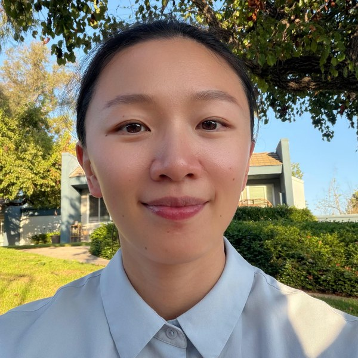

z>......:;c
........'_=!*<......
.....=TC[Yyya]SE2x1L:...
z...r|tY]EwkkPPkkPPP6P]lT=.-
^..>|tnZxy]SqP999d4VV4dh6Sx}>..
:..*f[noZYj]Ekh4VpOpOOOppdh6k]i..
r..*tnoZYja2SP9dpOOOObUAUbp49999t..
..=tooel1Iff3eyEP9ddhP]j5o5YZYyS6L.
/..C55uIffCCi(Ji3oySqExn[oyPVO4wEkj.r
7.?5Yxxjayaww]51Cfn2d6yeeoY2khpAGhkz
7.fajZnf?+;.^L7lf}[wKU6x(^..T|JePVdF
.f2j53(s77/sf{eeuZSVppp2u3l]6664V4e
w^}]a]2wkE]]]]EyY5Z29h9GXUOppUXHKOO5
1=ujya]Eq69996Eouln]69Pk69OKHmHHKOp4
[)ejexyEwP6k2e}n[eYSdPwwYjwdbAUbVO
Z7Zul[oxjjZlF(Frr)Cn}To2YoY]wkPdP
33Zf}ftlltfC|)?TiC[2ywd9]YxaES66
F)1liiC3t{F3tlulnojEk6PSZn2EwqB
I}{}Iui!c?**?**)Jiif[1oqk66
afCftlfiF)?T)J7CtZShSEk9h
l3Cf333fCiF(|fo2P66PP62
[1}}I311tlunZyEwP66h6
1t1f}f11l[oxy]SqP6PhEn
2n}fIf}I333tlnoj]Sk6dk}0V
k9tC}Cf}{iiiCIlej2Sk64qE0WgP
9]k6wPj7i}Cf}ii{I[x2wEEq9kaDW00QWdw3
Pxx5t[SwSqqx|)F}f}f1[Ya222E2x28NggBgUyUWXGb
4aYZ5yYZYSwwkSww[J)ifI1uZjjYnu59DgB$##DSkVKA4m@@@Mh
Upd6wSEE2]22]a]akkqwwqdho|)iItt}F{nPXDDRDRmR6wSw9V44R@@@@@@@A
pPSS]aaEwkkwwS22EEw2EqwwkkkdUOYiv?Lf59KHXm8mHXm4ojYy6ADgM@@@@@@@@@@HY
22ESS22wP6PPPkqS22wk62Skkk66h9ORdf3f68AAKXHHHKKKV2jZ5kHgHdK@@@@@@@@@@R62
qwqS2EP6hhhh666qE2SP9Pykwk6h944xl}3[lS#RHmHXXHVOpSwYn2b#Uk]b@@@@@@@QpEay
PPk2SP999hh9hh6kS2Sh9paxkwP9hy3n2EyxaJFpHKKXHhSVp9Pxny4mAPyYG@@@@@8hEaxa
h6qw6dd9h9d9hh6kS]S94pqu2wkPEYuna6h6k3*(2UAK4EPdV9PxnxhKKPjxjm@@XPwE]yxa

Xianhui (Kaye) Wang, Ph.D.@stc-lab
- Role
- Principal Investigator
- Title
- Assistant Professor
- School
- Speech, Language, and Hearing Sciences
- Ph.D.
- Hearing Science, Ohio University
Dr. Wang joined the School of Speech, Language, and Hearing Sciences at
San Diego State University in 2025. Her research examines how listeners
understand speech in complex acoustic environments, how that ability
varies across languages and clinical populations, and how auditory and
cognitive processing interact during effortful listening.
Before joining SDSU, she was a postdoctoral scholar in the Department of
Otolaryngology – Head and Neck Surgery at the University of
California, Irvine. She holds a Ph.D. in Hearing Science from Ohio
University, an M.Sc. in Audiological Science from University College
London, and a B.Eng. in Biomedical Engineering from Capital Medical
University.